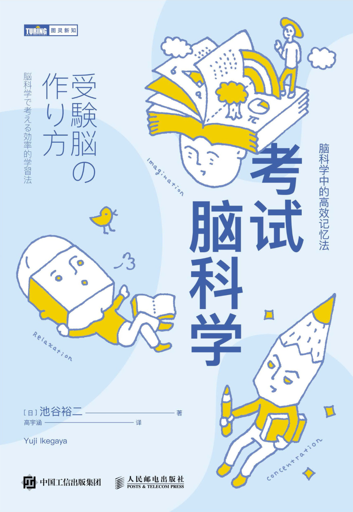

《考試腦科學》讀後筆記 - 天才的秘密
想要有高效的記憶法，關鍵在於如何掌握知識的本質和把短期記憶轉化成長期記憶。
 作者:池谷裕二看完書後我整理了書的內容和加上一些自己的見解，總結出下面7個學習的正確方法，輔以9個小技巧提高學習效率。經常煩惱記憶力差的讀者可以看一下。堅持以下方法至少3個月才會有效果。
術語
海馬體:根據信息對生存而言，是否不可或缺來判決信息是屬於”必要記憶”或”非必要記憶”
杏仁核:產生情緒；激活容易引神經元的LTP；人在情緒高漲時更容易記憶(正面和負面)
記憶恢復現象:相對於剛則學習的新知識，沉睡於大腦某處的知識更容易被回憶起來
遺忘曲線:人們在記住信息後4小時內會忘掉一半，1天後會忘掉70%，2天後會忘掉80%
LTP (long term potentiation) :神經元被刺激後，長期激活的現象；可提高專注力和記憶力，但無法承受壓力
θ波:當處於好奇，緊張，興奮，期待，憧憬時，人腦會產生θ波，可以增加LTP效應
知識記憶:暫存腦中的短期記憶，容易忘記
經驗記憶:由自身歷過形成的長期記憶，可以記憶很長的時間
方法記憶:本能記憶；通過實踐，大腦無意識中形成的記憶；難以說明，難以遺忘
方法
1.復習
原理:海馬體會將積極持續重複輸入和輸出的信息視為重要信息，從而使之變成長期記憶
-潛在記憶會保存約一個月，需在一個月內復習知識，不然復習就沒效果
-人腦記憶是輸出依賴型，要留住記憶就不能忽視輸出（默寫，測試，寫筆記）
-反復刺激海馬體才可產生 LTP，所以復習是必要的
復習方法:
第1次復習:學習後的第2天
第2次復習:第1次復習1周後
第3次復習:第2次復習2周後
第4次復習:第3次復習1個月後
2.喚醒情緒
原理:人腦容易記住帶有情緒的信息；透過刺激杏仁核產生LTP；情緒高漲會促使海馬體產生θ波
不正經學習法:學習時把知識聯想到一些’不正經’的事物來調動情緒刺激杏仁核
感動式學習法:帶有感情去記憶知識，例如代入書中人物的經歷
3.睡眠
原理:海馬體會在人睡眠時會整理記憶和產生θ波鞏固記憶
-學習新知識後要有充足的睡眠，不然很快會忘掉，趁還沒忘掉趕緊睡覺
-在睡前1-2小時學習，如把題目看一遍
-睡不著可以放空腦袋，有同樣效果
分散學習:將學習分散在不同時段進行，中間插入睡眠，降低遺忘速度
4.循序漸進式學習
原理:適應大腦的模糊記憶機制（為了記住相似/相關的事物，首先忘掉不相似/相關的事物），慢慢掌握事件關聯的過程和本質
詳細分解教學步驟，再循序漸進，接照步驟記憶，像教科書一樣
5.遷移學習
原理:先完全掌握擅長科目的理解方法（方法記憶），保留事件本質的策略，再應用到其他科目，令學習變得簡單
-學習水平越高，遷移效果越好
-記憶的東西越多，腦袋越好用（大腦對兩種不同的知識互相遷移學習，效果增長呈指數級）
-印謂的天才就是善於使用遷移學習並掌握方法記憶的人
例子:會踏自行車的人，很快就可以學會駕駛電單車；會駕駛電單車的人，很快就可以學會踏自行車；同時會踏自行車和駕駛電單車的人技術一般都很好。因為大腦掌握了在車上保持平衡的方法記憶，這種保持平衡的策略可以遷移應用到其他類似的交通工具，學習也是如此
6.改變記憶的方法
原理:人腦容易回想與自身經驗有關的記憶（經驗記憶），難以回想信息類的記憶（知識記憶）；把知識記憶轉成經驗記憶，使知識容易回想
聯想記憶法:
-把知識和個人信息、經驗、周邊環境、諧音等互相關聯，使其性質變成經驗記憶
-關聯越多，越容易回想
-發揮想像力，把知識形像化；”想像”這行為可以刺激到海馬體
經驗記憶法:
-向別人講述知識，使知識變成經驗記憶的一部份
-講述知識即輸出 -> 人腦記憶是輸出依賴型 -> 加強記憶
多感官學習法:
-把知識關聯多種感官，形成經驗記憶
-使用耳朵學習比使用眼睛學習效率要高
-看書時（視覺），動筆寫（觸覺），出聲讀（聽覺），反覆輸出，加強記憶
7.不要短時間內輸入大量知識
原理:人腦一次過記住的信息量有限；新舊記憶會互相干擾 (記憶混亂)，添加記憶容易導致之前的記憶提前消失
-避免一天內輸入大量的新知識
-復習和睡眠可以降低忘記知識的速度
小技巧
1.學習前聽莫扎特的音樂
莫扎特效應:聽了莫扎特的音樂後，使人一小時內變得聰明
2.自我激勵
在視線中出現積極向上的鼓勵語，可以鼓舞人心
3.不要在無聲空間中學習
動物一般有無聲空間中無法集中，且學習能力會下降
4.學習前吃糖或香口膠
汲收葡萄糖可以活躍腦袋
5.設立可實現的目標
設立容易實現的目標激勵自己，提高自信，避免失敗產生的挫敗感，提高學習動力
6.星期五效應
按照生物節律，在周五和周六學習效率最好
7.組塊化信息
將信息劃分為多個小組以便於記憶
例如:853972641 -> 853-972-641
8.想到就行動並堅持一陣子
刺激伏隔核，產生”行動興奮”現象
行動興奮: 一旦開始行動，狀態會漸入佳境，注意力能夠提升
9.利用動物本能
動物在饑餓，寒冷，走動（捕獵）時會產生θ波和LTP；動物天生畏懼血（紅色）
獅子記憶法:動物在饑餓，寒冷，捕獵時會產生危機感來刺激海馬體；在饑餓（飯前），寒冷（冷氣房間），走動（可以坐車）的狀態下學習
避開紅色:紅色具有降IQ，削弱勇氣的效果；不要讓自己學習的環境出現紅色